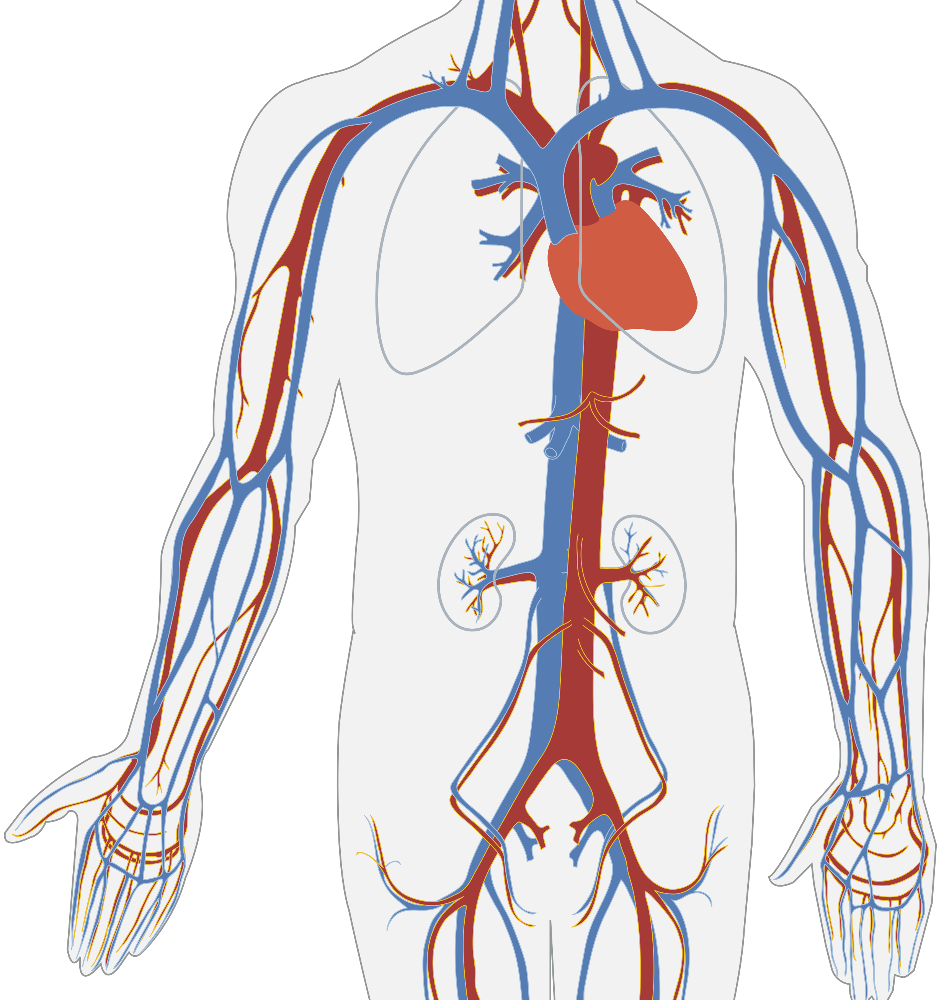
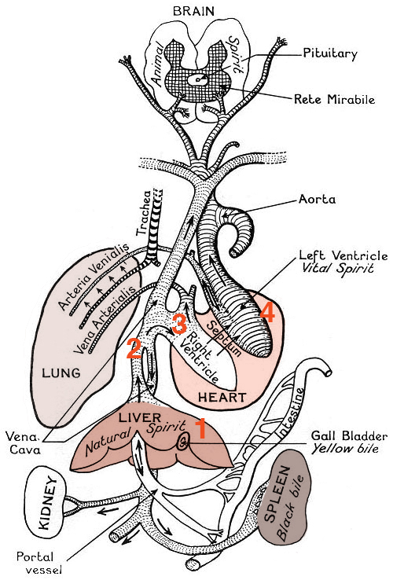

1 Arithmetic and variables
You can add up the parts, but you won’t have the sum;
You can strike up the march, there is no drum.
Every heart, every heart to love will come
But like a refugee.
–Leonard Cohen, Anthem
Mathematical modeling begins with a set of assumptions. In fact, one may say that a mathematical model is a bunch of assumptions translated into mathematics. These assumptions may be more or less reasonable, and they may come from different sources. For instance, many physical models are so well-established that we refer to them as laws; we are pretty sure they apply to molecules, cells, and organisms as well as to inanimate objects. Thus we may use physical laws as the foundation on which to build models of biological entities; these are often known as first-principles (theory-based) models. Other times we have experimental evidence which suggests a certain kind of relationship between quantities, perhaps we find that the amount of administered drug and the time until the drug is completely removed from the bloodstream are proportional to each other. This observation can be turned into an empirical (experiment-based) model. Yet another type of model assumption is not based on either theory or experiment, but simply on convenience: e.g. let us assume that the mutation rates in two different loci are independent, and see what the implications are. These are sometimes called toy or cartoon models (Jungck, Gaff, and Weisstein 2010).
This leads to the question: how do you decide whether a model is good? It is surprisingly difficult to give a straightforward answer to this question. Of course, one major goal of a model is to capture some essential features of reality, so in most biological modeling studies you will see a comparison between experimental results and predictions of the model. But it is not enough for a model to be faithful to experimental data! Think of a simple example: suppose your experiment produced 5 data points as a function of time; it is possible to find a polynomial (of fourth degree) that passes exactly through all 5 points, by specifying the coefficients of its 5 terms. This is called data fitting and it has a large role to play in mathematical modeling of biology. However, I think you will agree that in this case we have learned very little: we just substituted 5 values in the data set with 5 values of the coefficients of the mathematical model. To heighten the absurdity, imagine a data set of 1001 points that you have modeled using a 1000-degree polynomial. This is an example of overfitting, or making the model agree with the data by making it overly complex.
Substituting a complicated model for a complicated real situation does not help understand it. One necessary ingredient of a useful model is simplicity of assumptions. Simplicity in modeling has at least two virtues: simple models can be grasped by our limited minds, and simple assumptions can be tested against evidence. A simple model that fails to reproduce experimental data can be more informative than a complex model that fits the data perfectly. If a simple model fails, you have learned that you are missing something in your assumptions; but a complex model can be right for the wrong reasons, like erroneous assumptions canceling each other, or it may contain needless assumptions. This is why good modeling is a difficult skill that balances simplicity of assumptions against fidelity to empirical data (Cohen 2004). In this chapter you will learn how to do the following:
describe the utility of mathematical modeling
distinguish variables and parameters in models
describe the state space of a model
determine the dimensions of quantities in a model
1.1 Blood circulation and mathematical modeling
Galen was one of the great physicians of antiquity. He studied how the body works by performing experiments on humans and animals. Among other things, he was famous for a careful study of the heart and how blood traveled through the body. Galen observed that there were different types of blood: arterial blood that flowed out of the heart, which was bright red, and venous blood that flowed in the opposite direction, which was a darker color. This naturally led to questions: what is the difference between venous and arterial blood? where does each one come from and where does it go?
You, a reader of the 21st century, likely already know the answer: blood circulates through the body, bringing oxygen and nutrients to the tissues through the arteries, and returns back through the veins carrying carbon dioxide and waste products, as shown in Figure 1.1. Arterial blood contains a lot of oxygen while venous blood carries more carbon dioxide, but otherwise they are the same fluid. The heart does the physical work of pushing arterial blood out of the heart, to the tissues and organs, as well as pushing venous blood through the second circulatory loop that goes through the lungs, where it picks up oxygen and releases carbon dioxide, becoming arterial blood again. This may seem like a very natural picture to you, but it is far from easy to deduce by simple observation.

1.1.1 Galen’s theory of blood
Galen came up with a different explanation based on the notion of humors, or fluids, that was fundamental to the Greek conception of the body. He proposed that the venous and arterial blood were different humors: venous blood, or natural spirits, was produced by the liver, while arterial blood, or vital spirits, was produced by the heart and carried by the arteries, as shown in Figure 1.2. The heart consisted of two halves, and it warmed the blood and pushed both the natural and vital spirits out to the organs; the two spirits could mix through pores in the septum separating its right and left halves. The vital and natural spirits were both consumed by the organs, and regenerated by the liver and the heart. The purpose of the lungs was to serve as bellows, cooling the blood after it was heated by the heart.

Is this a good theory of how the heart, lungs, and blood work? Doctors in Europe thought so for over one thousand years! Galen’s textbook on physiology was the standard for medical students through the 17th century. The theory seemed to make sense, and explain what was observable. Many great scientists and physicians, including Leonardo DaVinci and Avicenna, did not challenge the inaccuracies such as the porous septum in the heart, even though they could not see the pores themselves. It took both better observations and a quantitative testing of the hypothesis to challenge the orthodoxy.
1.1.2 Mathematical testing of the theory
William Harvey was born in England and studied medicine in Padua under the great physician Hieronymus Fabricius. He became famous, and would perform public demonstrations of physiology, using live animals for experiments that would not be approved today. He also studied the heart and the blood vessels, and measured the volume of the blood that can be contained in the human heart. He was quite accurate in estimating the correct volume, which we now know to be about 70 mL (1.5 oz). What is even more impressive is that he used this quantitative information to test Galen’s theory.
Let us assume that all of the blood that is pumped out by the heart is consumed by the tissues, as Galen proposed; let us further assume that the heart beats at constant rate of 60 beats per minute, with a constant ejection volume of 70 ml. Then over the course of a day, the human body would consume about \[\mathrm{Volume} = 70 \ \mathrm {mL} \times 60 \ \mathrm {(beats \ per \ minute)} \times 60 \ \mathrm {(minutes \ per \ hour)} \times 24 \ \mathrm {(hours \ per \ day)}\]
or over 6,000 liters of blood! You may quibble over the exact numbers (some hearts beat faster or slower, some hearts may be larger or smaller) but the impact of the calculation remains the same: it is an absurd conclusion. Galen’s theory would require the human being to consume and produce a quantity of fluid many times the volume of the human body (about 100 liters) in a day! This is a physical impossibility, so the only possible conclusion in that Galen’s model is wrong.
This led Harvey to propose the model that we know today: that blood is not consumed by the tissues, but instead returns to the heart and is re-used again (Schultz 2002). This is why we call the heart and blood vessels part of the circulatory system of the body. This model was controversial at the time - some people proclaimed they would “rather be wrong with Galen, than right with Harvey” - but eventually became accepted as the standard model. What is remarkable is that Harvey’s argument, while grounded in empirical data, was strictly mathematical. He adopted the assumptions of Galen, made the calculations, and got a result which was inconsistent with reality. This is an excellent example of how mathematical modeling can be useful, because it can provide clear evidence against a wrong hypothesis.
1.2 Parameters and variables in models
Many biologists remain skeptical of mathematical modeling. The criticism can be summarized like this: a theoretical model either agrees with experiment, or it does not. In the former case, it is useless, because the data are already known; in the latter case, it is wrong! As I indicated above, the goal of mathematical modeling is not to reproduce experimental data; otherwise, indeed, it would only be of interest to theoreticians. The correct question to ask is, does a theoretical model help us understand the real thing? There are at least three ways in which a model can be useful:
A model can help a scientist make sense of complex data, by testing whether a particular mechanism explains the observations. Thus, a model can help clarify our understanding by throwing away the non-essential features and focusing on the most important ones.
A mathematical model makes predictions for situations that have not been observed. It is easy to change parameters in a mathematical model and calculate the effects. This can lead to new hypotheses that can be tested by experiments.
Model predictions can lead to better experimental design. Instead of trying a whole bunch of conditions, the theoretical model can suggest which ones will produce big effects, and thus can save a lot of work for the lab scientist.
In order to make a useful model of a complex living system, you have to simplify it. Even if you are only interested in a part of it, for instance a cell or a single molecule, you have to make simplifying choices. A small protein has thousands of atoms, a cell consists of millions of molecules, which all interact with each other; keeping track mathematically of every single component is daunting if not impossible. To build a useful mathematical model one must choose a few quantities which describe the system sufficiently to answer the questions of interest. For instance, if the positions of a couple of atoms in the protein you are studying determine its activity, those positions would make natural quantities to include in your model. You will find more specific examples of models later in this chapter.
Once you have decided on the essential quantities to be included in the model, these are divided into variables and parameters. As suggested by the name, a variable typically varies over time and the model tracks the changes in its value, while parameters usually stay constant, or change more slowly. However, that is not always the case. The most important difference is that variables describe quantities within the system being modeled, while parameters usually refer to quantities which are controlled by something outside the system.
As you can see from this definition, the same quantity can be a variable or a parameter depending on the scope of the model. Let’s go back to our example of modeling a protein: usually the activity (and the structure) of a protein is influenced by external conditions such as pH and temperature; these would be natural parameters for a model of the molecule. However, if we model an entire organism, the pH (e.g. of the blood plasma) and temperature are controlled by physiological processes within the organism, and thus these quantities will now be considered variables.
Perhaps the clearest way to differentiate between variables and parameters is to think about how you would present a data set visually. We will discuss plotting data sets in Chapter 2, and plotting graphs of functions in Chapter 3, but the reader has likely seen many such plots before. Consider which of the quantities you would to plot to describe the system you are modeling. If the quantity belongs on either axis, it is a variable, since it is important to describe how it changes. The rest of the quantities can be called parameters. Of course, depending on the question you ask, the same quantity may be plotted on an axis or not, which is why this classification is not absolute.
After we have specified the essential variables for your model, we can describe a complex and evolving biological system in terms of its state. This is a very general term, but it usually means the values of all the variables that you have chosen for the model, which are often called state variables. For instance, an ion channel can be described with the state variable of conformation, which may be in a open state or in a closed state. The range, or collection of all different states of the system is called the state space of the model. Below you will find examples of models of biological systems with diverse state spaces.
1.2.1 discrete state variables: genetics
There are genes which are present in a population as two different versions, called alleles - let us use letters \(A\) and \(B\) to label them. One may describe the genetic state of an individual based on which allele it carries. If this individual is haploid, e.g. a bacterium, then it only carries a single copy of the genome, and its state can be described by a single variable with the state space of \(A\) or \(B\).
A diploid organism, like a human, possesses two copies of each gene (unless it is on one of the sex chromosomes, X or Y); each copy may be in either state \(A\) or \(B\). This may seem to suggest that there are four different values in the genetic state space, but if the order of the copies does not matter (which is usually the case), then \(AB\) and \(BA\) are effectively the same, so the state space consists of three values: \(AA\), \(BB\), and \(AB\).
1.2.2 discrete state variables: population
Consider the model of a population of individuals, with the variable of number of individuals (populations size) and parameters being the birth and death rates. The state space of this model is all integers between 0 and infinity.
Consider the model of a population of individuals who may get infected. Assume that the total number of individuals does not change (that is, there are no births and deaths) and that these individuals can be in one of two states: healthy or sick (in epidemiology these are called susceptible or infectious). There are typically two parameters in such models: the probability of infection and the probability of recovery. Since the total population is fixed at some number \(N\), the space space of the model is all pairs of integers between 0 and \(N\) that add up to \(N\).
1.2.3 continuous state variables: concentration
Suppose that a biological molecule is produced with a certain rate and degraded with a different rate, and we would like to describe the quantity of the molecule, usually expressed as concentration. The relevant variables here are concentration and time, and you will see those variables on the axes of many plots in biochemistry. Concentration is a ratio of the number of molecules and the volume, so the state space can be any positive real number (although practically there is a limit as to how many molecules can fit inside a given volume, but for simplicity we can ignore this).
Going even further, let us consider an entire cell, which contains a large number of different molecules. We can describe the state of a cell as the collection of all the molecular concentrations, with the parameters being the rates of all the reactions going on between those molecules. The state space for this model with \(N\) different molecules is \(N\) positive real numbers.
1.2.4 multiple variables in medicine
Doctors take medical history from patients and measure vital signs to get a picture of a patient’s health. These can be all be thought of as variables in a model of a person that physicians construct. Some of these variables are discrete, for instance whether there is family history of hypertension, which has only two values: yes or no. Other variables are numbers with a range, such as weight and blood pressure. The state space of this model is a combination of categorical values (such as yes/no) and numerical values (within a reasonable range).
1.2.5 Discussion questions
Several biological models are indicated below. Based on what you know, divide the quantities into variables and parameters and describe the state space of the model. Note that there may be more than one correct interpretation
The volume of blood pumped by the heart over a certain amount of time, depending on the heart rate and the ejection volume.
The number of wolves in a national forest depending on the number of wolves in the previous year, the birth rate, the death rate, and the migration rate.
The fraction of hemes in hemoglobin (a transport protein in red blood cells) which are bound to oxygen depending on the partial pressure of oxygen and the binding cooperativity of hemoglobin.
The number of mutations that occur in a genome, depending on the mutation rate, the amount of time, and the length of the genome.
The concentration of a drug in the blood stream depending on the dose, time after administration, and the rate of metabolism (processing) of the drug.
Describing an outbreak of an infectious disease in a city in terms of the fractions of infected, healthy, and recovered people, depending on the rate of infection, rate of recovery, and the mortality rate of the disease.
1.3 Dimensions of quantities
What distinguishes a mathematical model from a mathematical equation is that the quantities involved have a real-world meaning. Each quantity represents a measurement, and associated with each one are the units of measurement. The number 173 is not enough to describe the height of a person - you are left to wonder 173 what? meters, centimeters, nanometers, light-years? Obviously, only centimeters make sense as a unit of measurement for human height; but if we were measuring the distance between two animals in a habitat, meters would be a reasonable unit, and it were the distance between molecules in a cell, we would use nanometers. Thus, any quantity in a mathematical model must have associated units, and any graphs of these quantities must be labeled accordingly.
In addition to units, each variable and parameter has a meaning, which is called the dimension of the quantity. For example, any measurement of length or distance has the same dimension, although the units may vary. The value of a quantity depends on the units of measurement, but its essential dimensionality does not. One can convert a measurement in meters to that in light-years or cubits, but one cannot convert a measurement in number of sheep to seconds - that conversion has no meaning.
Thus leads us to the fundamental rule of mathematical modeling: terms that are added or subtracted must have the same dimension. This gives mathematical modelers a useful tool called dimensional analysis, which involves replacing the quantities in an equation with their dimensions. This serves as a check that all dimensions match, as well as allowing to deduce the dimensions of any parameters for which the dimension was not specified (Smith 1968).
Example. As we saw in chapter 1, the relationship between the amount blood pumped by a heart in a certain amount of time is expressed in the following equation, where \(V_{tot}\) and \(V_s\) are the total volume and stroke volume, respectively, \(R\) is the heart rate, and \(t\) is the time: \[ V_{tot} = V_sRt \] The dimension of a quantity \(X\) is denoted by \([X]\); for example, if \(t\) has the dimension of time, we write \([t] = time\). The dimension of volume is \([V_{tot}] = length^3\), the dimension of stroke volume is \([V_s] = volume/beat\) and the dimension of time \(t\) is time, so we can re-write the equation above in dimensional form:
\[length^3 = length^3/ beat \times R \times time\]
Solving this equation for R, we find that it must have the dimensions of \([R] = beats/time\). It can be measured in beats per minute (typical for heart rate), or beats per second, beats per hour, etc. but the dimensionality of the quantity cannot be changed without making the model meaningless.
There are also dimensionless quantities, or pure numbers, which are not tied to a physical meaning at all. Fundamental mathematical constants, like \(\pi\) or \(e\), are classic examples, as are some important quantities in physics, like the Reynolds number in fluid mechanics (Strogatz 2001). Quantities with a dimension can be made dimensionless by dividing them by another quantity with the same dimension and “canceling” the dimensions. For instance, we can express the height of a person as a fraction of the mean height of the population; then the height of a tall person will become a number greater than 1, and the height of a short one will become less than 1. This new dimensionless height does not have units of length - they have been divided out by the mean height. This is known as rescaling the quantity, by dividing it by a preferred scale. There is a fundamental difference between rescaling and changing the units of a quantity: when changing the units, e.g. from inches to centimeters, the dimension remains the same, but if one divides the quantity by a scale, it loses its dimension.
Example. The model for a population of bacteria that doubles every hour is described by the equation, where \(P_0\) is initial number of bacteria and \(P\) is the population after \(t\) hours: \[ P = P_0 2^t \] Let us define the quantity \(R=P/P_0\), so we can say that population increased by a factor of \(R\) after \(t\) hours. This ratio is a dimensionless quantity because \(P\) and \(P_0\) have the same dimension of bacterial population, which cancel out. The equation for \(R\) can be written as follows: \[ R= 2^t \] According to dimensional analysis, both sides of the equation have to be dimensionless, so \(t\) must also be a dimensionless variable. This is surprising, because \(t\) indicates the number of hours the bacterial colony has been growing. This reveals the subtle fact that \(t\) is a rescaled variable obtained by dividing the elapsed time by the length of the reproductive cycle. Because of the assumption that the bacteria divide exactly once an hour, \(t\) counts the number of hours, but if they divided once a day, \(t\) would denote the number of days. So \(t\) doesn’t have units or dimensions, but instead denotes the dimensionless number of cell divisions.
1.3.0.1 exercises
For each biological model below determine the dimensions of the parameters, based on the given dimensions of the variables.
Model of number of mutations \(M\) as a function of time \(t\): \[ M(t) = M_0 + \mu t\]
Model of molecular concentration \(C\) as a function of time \(t\): \[ C(t) = C_0 e^{-kt} \]
Model of tree height \(H\) (length) as a function of age \(a\) (time): \[ H(a) = \frac{b a}{c + a}\]
Model of cooperative binding of ligands, with fraction of bound receptors \(\theta\) as a function of ligand concentration \(L\): \[ \theta (L) = \frac{L^n}{L^n + K_d}\]
Model of concentration of a gene product \(G\) (concentration) as a function of time \(t\): \[ G(t) = G_m (1 - e^{-\alpha t})\]
Michaelis-Menten model of enzyme kinetics, \(v\) is reaction rate (1/time) and \(S\) is substrate concentration: \[ v(S) = \frac{v_{max} S}{K_m + S}\]
Logistic model of population growth, \(P\) is population size and time \(t\): \[ P(t) = \frac{A}{1 + Be^{-rt}} \]